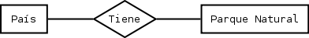
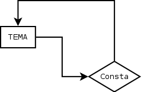

Teoría de base de datos¶
Note
| Fecha | Autores |
|---|---|
| 1 Noviembre 2012 |
|
| 15 Octubre 2013 |
|
©2012 Micho García
Excepto donde quede reflejado de otra manera, la presente documentación se halla bajo licencia : Creative Commons (Creative Commons - Attribution - Share Alike: http://creativecommons.org/licenses/by-sa/3.0/deed.es)
Bases de datos, el enfoque general¶
La utilización de base de datos se ha extendido dando solución a problemas como
- Manejo de grandes volúmenes de datos
- Complejidad en la extracción de estos datos
- Concurrencia en el acceso a datos, accesos simultáneos por varios usuarios
Antes el almacenamiento y manejo de la información se realizaba mediante el uso de archivos, formatos tipo texto o archivos con estructuras internas (.dbf) permitían el manejo de esta información. Tenían limitaciones como
- Limitaciones en la cantidad de datos que era posible almacenar
- Rendimiento de lectura de estos archivos
- Bloqueo de los archivos con el acceso por usuario
- Imposibilidad de gestionar el versionado de manera sencilla
Gracias al desarrollo de la tecnología se democratiza el uso de ordenadores potentes que permiten poner a disposición de las organizaciones equipos potentes que gestionen de manera eficiente las base de datos mediante Sistemas gestores de bases de datos (SGBD).
Una base de datos es
- Una gran masa de datos relacionados entre si pertenecientes a un mismo contexto
- Colección estructurada almacenada en un sistema informático
Objetivo
- Aportar a la organización a la que sirve la información necesaria
Funciones
- Recogida
- Almacenamiento
- Procesamiento
- Recuperación
Propiedades
- Estructuradas de manera independiente de las aplicaciones y del soporte de almacenamiento que las contiene (SQL)
- Presentan la menor redundancia posible
- Son compartidas por todos los usuarios de una red
Así de esta manera podremos definir unos Objetivos generales de la base de datos
- Abstracción de la información
- Independencia
- Redundancia mínima
- Consistencia
- Seguridad
- Integridad
- Respaldo y recuperación
- Control de la concurrencia, versionado
- Tiempo de respuesta
Debemos diferenciar entre base de datos y SGBD. La primera se encarga del almacenamiento propiamente dicho y el SGBD de la manipulación de la información contenida en la base de datos. Una base de datos asimismo contendrá no solo los datos propios, sino que puede almacenar consultas sobre estos datos, vistas, informes...
El modelo de datos es el encargado de reflejar mediante un conjunto de REGLAS y CONCEPTOS la estructura de datos y operaciones aplicables sobre estos datos. Se trata de una abstracción de la realidad. Permite definir el tipo de datos que hay en la base de datos y la forma en que se relacionan. Además aplica restricciones entre estos datos, condiciones que deben cumplir estos para reflejar la realidad. Por último se definen en ellos las operaciones de manipulación de los datos de la base de datos
Existen modelos de datos jerárquicos, de red, orientados a objetos... Nosotros estudiaremos en Modelo de datos relacional, por ser el más ampliamente utilizado para el modelado de la realidad. Desarrollado en 1970 por Edgar Frank Codd se ha consolidado como el paradigma de los modelos de datos. Una base de datos relacional es un conjunto de una o más tablas estructuradas en registros (líneas) y campos (columnas), que se vinculan entre sí por un campo en común, en ambos casos posee las mismas características como por ejemplo el nombre de campo, tipo y longitud; a este campo generalmente se le denomina ID, identificador o clave. A esta manera de construir bases de datos se le denomina modelo relacional y está implementado en los SGBD relacionales, como por ejemplo PostgreSQL.
Tablas, columnas, registros¶
Dentro del modelo de datos relacional los conceptos básicos con las que comenzar serán
- Tablas
- Columnas
- Registros
- Relaciones
Para llegar a comprender la necesidad de estos debemos partir del deseo de almacenar una información determinada, unos datos. Los datos serian la información que deseamos almacenar. Un dato puede ser
- El area de un parque natural
- El nombre de un parque natural
- La dirección de una oficina de correos
- El número de empleados de la oficina de correos
- El nombre de un accidente geográfico
- Las coordenadas de un accidente geográfico
- ...
Cualquier echo conocido que pueda registrarse y que tenga un significado implícito. Una entidad es todo aquello de lo cual nos interesa guardar datos, por ejemplo
- Parques naturales
- Oficinas de correos
- Accidentes geográficos
- ...
Práctica 1¶
Defina la estructura de una tabla para los Parques Naturales de su país. Para ello detecte la información necesaria susceptible de ser almacenada y estructúrela en una tabla definiendo el nombre de los campos.
Modelización de base de datos¶
Para seguir adelante con el modelo relacional antes necesitamos definir algunos conceptos más
Entidad¶
Por entidad entendemos un objeto del mundo real que podemos distinguir del resto de objetos y del que nos interesan algunas propiedades.
En el modelo relacional, se puede observar que estas entidades se formarán por atributos o campos referidos a un mismo tema que interesa almacenar. Una entidad debe definir cualquier objeto real o abstracto (que pueda ser pensado) y acerca del cual queremos guardar información. Se representan mediante rectángulos en el modelo relacional
Una entidad se correspondería en el modelo relacional con una tabla. La tabla a su vez estará formada por filas y columnas que serán
- FILAS serían cada unidad necesaria de almacenamiento, que se corresponden con los REGISTROS de la tabla
- COLUMNAS que se corresponden con los CAMPOS, unidad mínima de información, donde podríamos almacenar cada dato referente a una propiedad del REGISTRO
Mediante este sencillo esquema podremos definir en nuestro sistema las entidades mínimas necesarias para almacenar información.
Ejemplo de tablas:
TABLA -> ENTIDAD -> PARQUE NATURAL
FILA -> REGISTRO -> Parque Nacional de
COLUMNA -> CAMPO -> 8º 33´´ N 83º 35´´ O
Ejemplos de entidad
Algunos ejemplos de entidad son un empleado, un producto o un despacho. También son entidades otros elementos del mundo real de interés, menos tangibles pero igualmente diferenciables del resto de objetos; por ejemplo, una asignatura impartida en una universidad, un préstamo bancario, un pedido de un cliente, etc.
El término entidad se utiliza tanto para denominar objetos individuales como para hacer referencia a conjuntos de objetos similares de los que nos interesan los mismos atributos; es decir, que, por ejemplo, se utiliza para designar tanto a un empleado concreto de una empresa como al conjunto de todos los empleados de la empresa. Más concretamente, el término entidad se puede referirá instancias u ocurrencias concretas (empleados concretos) o a tipos o clases de entidades (el conjunto de todos los empleados).
El modelo ER proporciona una notación diagramática para representar gráficamente las entidades y sus atributos:
- Las entidades se representan con un rectángulo. El nombre de la entidad se escribe en mayúsculas dentro del rectángulo.
Ejemplo de Entidad:
PARQUE NATURAL -> Entidad
OFICINA CORREO -> Entidad
ACCIDENTE GEOGRÁFICO -> Entidad
Entidad débil¶
Una entidad débil es una entidad cuyos atributos no la identifican completamente, sino que sólo la identifican de forma parcial. Esta entidad debe participar en una interrelación que ayuda a identificarla.
Una entidad débil se representa con un rectángulo doble, y la interrelación que ayuda a identificarla se representa con una doble línea.

Ejemplo entidad débil:
Curso -> Profesor
Localidad -> Provincia
Dominio y valor¶
El conjunto de posibles valores que puede tomar una cierta característica se denomina dominio

Ejemplo de dominio:
Inglés pertenece al dominio de Idiomas
33000ha pertenece al dominio de unidades de medida de superficie
Atributo¶
Cada una de las propiedades o características que tiene un tipo de entidad o un tipo de relación se denomina atributo; estos toman valores de uno o varios dominios.

Dentro del modelo relacional podremos encontrar atributos multivaluados y también opcionales.
Atributo multivaluado: atributos de una entidad que pueden tener más de un valor.
Atributo optativo: aquel que puede admitir valores nulos
Atributo identificador: Uno o más campos cuyos valores son únicos en cada ejemplar de una entidad
- Deben distinguir a cada ejemplar tendiendo en cuenta las entidades que utiliza el modelo
- Todos los ejemplares de un entidad deben tener el mismo identificador
- Cuando un atributo es importante aun cuando no tenga entidad concreta asociada, entonces se trata de una entidad y no de un atributo
Ejemplo de atributo:
Parque Natural -> Superficie
Parque Natural -> Nombre
Parque Natural -> Teléfono
Ejemplo de atributo multivaluado:
Idiomas de un curso -> Inglés, francés...
Restricciones¶
Se trata de limitaciones en las estructuras y en los datos impuestas por el propio modelo o por el desarrollador del modelo. Estas solo deben darse entre las entidades del modelo, nunca entre las relaciones. El modelo obliga a que las entidades tengan un identificador. El uso de dominios se puede considerar una restricción sobre los valores. Además existen restricciones estructurales.
Ejemplo restricción:
* Restricción de dominio::
* Un trabajador de Correos de Costa Rica no puede tener un sueldo menor a 75000 colones
* Integridad referencial::
* Si cierra Correos de Costa Rica no puede quedar ninguna Oficina en la base de datos
Relación¶
Esta se define como la asociación, vinculación o correspondencia entre entidades. Pueden existir mas de una relación entre entidades.
Ejemplo de interrelación:
País -> tiene -> Parque Natural
En una relación se pueden definir los siguientes elementos:
Nombre, es el valor por el que se distingue del resto. En la representación gráfica se correspondería con la etiqueta incluida en el rombo que representa la relación. Aporta semántica al modelo relacional
Grado, se trata del número de entidades que participan en un tipo de relación. Será de grado 2 (o binaria) cuando asocia dos tipos de entidad. Para las relaciones de grado 2 puede existir un caso particular que son las reflexivas o recursivas, en las cuales una entidad se asocia consigo misma.
Tipo de correspondencia, es el número máximo de ejemplares que pueden estar asociados, en una determinada relación, con un ejemplar de otro tipo. Para representarlo graficamente se pone una etiqueta 1:1, 1:N o N:M en el lado de la relación que corresponda o bien se orienta el arco de la unión en el sentido 1 a N mediante una flecha

Papel (“rol”), la función que cada uno de los tipos de entidad realiza en la relación. Se representa poniendo el nombre del papel en el arco de cada entidad

Cardinalidad de un tipo de entidad¶
Se define como el número mínimo y máximo de ejemplares de un tipo de entidad que pueden estar interrelacionadas con un ejemplar del otro, u otros tipos de entidad que participan en el tipo de relación. Se representará graficamente mediante un etiqueta del tipo (0,1), (1,1), (0,N) o (1,N).

Atributos de las relaciones¶
Se puede dar el caso de que existan atributos para las relaciones. Cuando esto se da en una relación 1:N este atributo debe llevarse a la entidad de cardinalidad máxima. En el caso de relaciones 1:1 o N:M el atributo se mantiene en la relación
Ejemplo de atributos en relación:
1:N Curso -> Tiene (Fecha_imparte) -> Edición = Curso -> Tiene -> Edición (Fecha_imparte)
1:1 Hombre -> Matrimonio (Fecha) -> Mujer
Generalización/Especialización¶
Entidades is a¶
Un tipo de entidad is a es aquella que se descompone en entidades especializadas. Existen dos tipos de entidades is a: especializaciones y generalizaciones.
Se denomina especialización se trata de entidades que se pueden dividir en entidades más concretas. La entidad general comparte con las especializadas sus atributos. Se detecta cuando hay ejemplares para los que no tienen sentido algunos de los atributos mientras que otros si.
La generalización es si se agrupan varias entidades en una o mas entidades generales. Se observa generalización si en varias entidades existen atributos iguales.

En estas relaciones se puede hablar de herencia en los atributos, superentidad y subentidad. Mediante un circulo en la superentidad indicaremos que esta es optativa.
También podemos indicar exclusividad, mediante un arco que cruce las lineas de relación. De esta manera indicaremos que la subentidad debe ser única.
Normalización¶
El proceso de normalización de bases de datos consiste en aplicar una serie de reglas a las relaciones obtenidas tras el paso del modelo entidad-relación al modelo relacional. Las bases de datos relacionales se normalizan para:
- Evitar la redundancia de los datos.
- Evitar problemas de actualización de los datos en las tablas.
- Proteger la integridad de los datos.
Modelización¶
- Encontrar entidades (conjuntos de entidades)
- Identificar atributos de las entidades
- Buscar identificadores
- Especificar las relaciones y cardinalidades
- Identificar entidades débiles
- Especializar y generalizar entidades donde sea posible
Referencias¶
Restricciones a la Base de Datos: Integridad y seguridad http://s3.amazonaws.com/UNED/apuntes/Tema6.pdf
Bases de datos http://es.wikipedia.org/wiki/Base_de_datos
Modelos de datos relacional http://es.wikipedia.org/wiki/Modelo_relacional
Implantación de sistemas informáticos de gestión. Bases de datos http://www.slideshare.net/johntoasa2010/teoria-de-base-de-datos
Teoría de bases de datos http://si.ua.es/es/documentos/documentacion/office/access/teoria-de-bases-de-datos.pdf
Diseño conceptual de bases de datos http://www.jorgesanchez.net/bd/disenoBD.pdf | http://www.jorgesanchez.net/bd/index.html | http://www.jorgesanchez.net/bd/ejercicioser.html
Diseño de bases de datos relacionales Adoración de Miguel, Mario Pattini y Esperanza Marcos. Editorial Ra-Ma
Entidades débiles http://www.dataprix.com/217-entidades-debiles